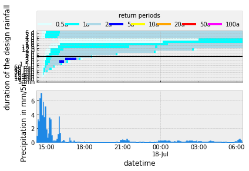
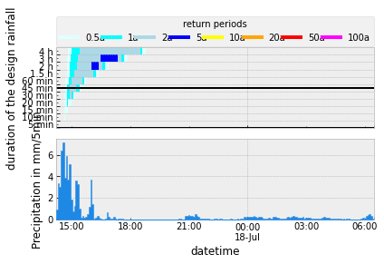

[2]:
from idf_analysis.idf_class import IntensityDurationFrequencyAnalyse
from idf_analysis.definitions import *
import pandas as pd
from os import path
%matplotlib inline
import matplotlib.pyplot as plt
plt.style.use('bmh')
Intensity Duration Frequency Analyse - EXTENDED¶
[3]:
# sub-folder for the results
output_directory = path.join('ehyd_112086_idf_data')
# initialize of the analysis class
idf = IntensityDurationFrequencyAnalyse(series_kind=SERIES.PARTIAL, worksheet=METHOD.KOSTRA, extended_durations=True)
# reading the pandas series of the precipitation (data from ehyd.gv.at - ID=112086)
series = pd.read_parquet('ehyd_112086.parquet')['precipitation']
# setting the series for the analysis
idf.set_series(series)
# auto-save the calculated parameter so save time for a later use
idf.auto_save_parameters(path.join(output_directory, 'idf_parameters.yaml'))
[12]:
events = idf.rain_events
"Columns: ", events.columns, "| Number of events: ", events.index.size
[12]:
('Columns: ',
Index(['start', 'end', 'duration', 'rain_sum', 'last_event'], dtype='object'),
'| Number of events: ',
1356)
[13]:
# reduce number of event by limiting the minimum sum of rainfall
events = events[events[COL.LP] > 10].copy()
"Columns: ", events.columns, "| Number of events: ", events.index.size
[13]:
('Columns: ',
Index(['start', 'end', 'duration', 'rain_sum', 'last_event'], dtype='object'),
'| Number of events: ',
252)
[14]:
# add the maximum return period to the events and at which duration this period occurs
idf.add_max_return_periods_to_events(events)
"Columns: ", events.columns, "| Number of events: ", events.index.size
[14]:
('Columns: ',
Index(['start', 'end', 'duration', 'rain_sum', 'last_event',
'max_return_period', 'max_return_period_duration'],
dtype='object'),
'| Number of events: ',
252)
[15]:
# reduce number of event by limiting the minimum return period of an event
events = events[events[COL.MAX_PERIOD] > 2].copy()
"Columns: ", events.columns, "| Number of events: ", events.index.size
[15]:
('Columns: ',
Index(['start', 'end', 'duration', 'rain_sum', 'last_event',
'max_return_period', 'max_return_period_duration'],
dtype='object'),
'| Number of events: ',
19)
[16]:
events
[16]:
| start | end | duration | rain_sum | last_event | max_return_period | max_return_period_duration | |
|---|---|---|---|---|---|---|---|
| 105 | 2008-06-23 19:50:00 | 2008-06-23 23:23:00 | 0 days 03:33:00 | 34.9 | 2 days 21:52:00 | 5.363788 | 15.0 |
| 125 | 2008-07-17 14:14:00 | 2008-07-18 06:27:00 | 0 days 16:13:00 | 74.6 | 0 days 04:09:00 | 6.457449 | 120.0 |
| 127 | 2008-07-20 17:43:00 | 2008-07-21 03:55:00 | 0 days 10:12:00 | 27.7 | 2 days 02:48:00 | 2.831013 | 5760.0 |
| 277 | 2009-07-18 08:55:00 | 2009-07-18 13:19:00 | 0 days 04:24:00 | 58.0 | 2 days 01:56:00 | 3.422038 | 240.0 |
| 286 | 2009-08-21 19:49:00 | 2009-08-21 20:29:00 | 0 days 00:40:00 | 34.2 | 4 days 03:04:00 | 3.930161 | 20.0 |
| 289 | 2009-08-28 23:41:00 | 2009-08-29 00:42:00 | 0 days 01:01:00 | 49.3 | 1 days 03:44:00 | 20.299093 | 20.0 |
| 291 | 2009-09-04 00:31:00 | 2009-09-04 18:18:00 | 0 days 17:47:00 | 69.0 | 5 days 11:06:00 | 2.605659 | 1080.0 |
| 566 | 2011-08-03 19:52:00 | 2011-08-04 07:45:00 | 0 days 11:53:00 | 54.7 | 1 days 23:09:00 | 12.962866 | 20.0 |
| 684 | 2012-07-14 16:54:00 | 2012-07-15 13:07:00 | 0 days 20:13:00 | 59.8 | 1 days 01:15:00 | 3.720531 | 8640.0 |
| 797 | 2013-05-05 20:46:00 | 2013-05-07 12:41:00 | 1 days 15:55:00 | 119.6 | 0 days 17:29:00 | 30.584981 | 2880.0 |
| 844 | 2013-08-27 17:09:00 | 2013-08-27 23:48:00 | 0 days 06:39:00 | 43.3 | 0 days 13:56:00 | 2.452099 | 5.0 |
| 845 | 2013-08-28 11:41:00 | 2013-08-28 16:22:00 | 0 days 04:41:00 | 28.5 | 0 days 11:53:00 | 3.543837 | 2880.0 |
| 947 | 2014-05-11 10:20:00 | 2014-05-11 23:18:00 | 0 days 12:58:00 | 55.7 | 0 days 13:15:00 | 2.082195 | 2880.0 |
| 948 | 2014-05-12 17:22:00 | 2014-05-13 17:27:00 | 1 days 00:05:00 | 20.6 | 0 days 18:04:00 | 2.798822 | 4320.0 |
| 1137 | 2015-07-08 11:50:00 | 2015-07-09 00:26:00 | 0 days 12:36:00 | 77.8 | 8 days 13:52:00 | 6.054031 | 720.0 |
| 1261 | 2016-06-05 11:03:00 | 2016-06-05 14:57:00 | 0 days 03:54:00 | 40.4 | 0 days 19:55:00 | 6.537112 | 5.0 |
| 1294 | 2016-07-21 22:28:00 | 2016-07-21 23:21:00 | 0 days 00:53:00 | 37.2 | 5 days 00:03:00 | 2.426623 | 30.0 |
| 1298 | 2016-07-25 10:18:00 | 2016-07-25 15:48:00 | 0 days 05:30:00 | 33.8 | 0 days 19:00:00 | 3.400347 | 5760.0 |
| 1300 | 2016-07-27 15:25:00 | 2016-07-27 20:25:00 | 0 days 05:00:00 | 12.2 | 1 days 01:04:00 | 4.663787 | 8640.0 |
[18]:
# lets pick one event
event = events.loc[125]
event
[18]:
start 2008-07-17 14:14:00
end 2008-07-18 06:27:00
duration 0 days 16:13:00
rain_sum 74.6
last_event 0 days 04:09:00
max_return_period 6.457449
max_return_period_duration 120.0
Name: 125, dtype: object
[19]:
fig, caption = idf.event_plot(event)
fig.tight_layout()

[20]:
# you can also reduce the displayed duration steps
fig, caption = idf.event_plot(event, durations=idf.duration_steps[:11])
fig.tight_layout()
